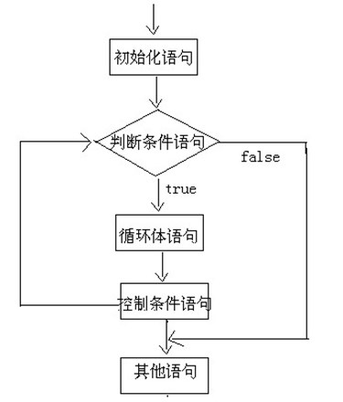
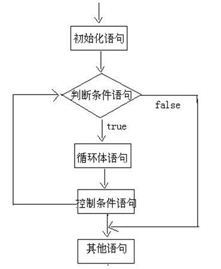
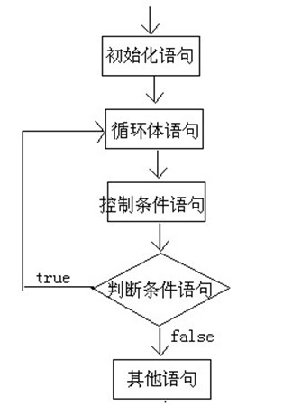

循环语句功能
在某些条件满足的情况下，反复执行特定代码的功能。
循环语句有四个部分组成
初始化部分。
循环条件部分。
循环体部分。
迭代部分。
循环语句的分类
for循环
for(初始化语句;判断条件语句;控制条件语句) {
循环体语句;
}

while循环
while(判断条件语句) {
循环体语句;
}
//扩展格式
初始化语句;
while(判断条件语句) {
循环体语句;
控制条件语句;
}

do/while循环
do {
循环体语句;
}while((判断条件语句);

五、循环结构的区别及注意事项：
三种循环语句其实都可以完成一样的功能，也就是说可以等价转换，但还是有小区别的:
1、注意事项：
写程序优先考虑for循环，再考虑while循环，最后考虑do…while循环。
如下代码是死循环：
for循环和while循环的区别：
for循环语句和while循环语句可以等价转换，但还是有些小区别的。
（1）使用区别：
控制条件语句所控制的那个变量，在for循环结束后，就不能再被访问到了，而while循环结束还可以继续使用，如果你想继续使用，就用while，否则推荐使用for。原因是for循环结束，该变量就从内存中消失，能够提高内存的使用效率。
（2）场景区别：
循环的嵌套使用：就是循环语句的循环体本身是一个循环语句。
实质上，嵌套循环就是把内层循环当成外层循环的循环体，只有当内层循环的循环条件为false时，才会完全跳出内层循环，才可结束外层的当次循环，开始下一次循环。
设外层循环次数为m次，内层循环为n，则内层循环实际上需要执行m*n次。
在写嵌套循环的时候，要尽量保证外层循环的次数小于内层循环的次数。
跳转控制语句
Java中的goto是保留字，目前不能使用。虽然没有goto语句可以增强程序的安全性，但是也带来很多不便，比如说，我想在某个循环知道到某一步的时候就结束，现在就做不了这件事情。为了弥补这个缺陷，Java就提供了break，continue和return来实现控制语句的跳转和中断。
break的使用场景：
注：离开使用场景的存在是没有意义的
break的作用：
A:跳出单层循环
B:跳出多层循环
continue的使用场景：
continue和break的区别：
跳转控制语句(return)
return关键字不是为了跳转出循环体，更常用的功能是结束一个方法，也就是退出一个方法，跳转到上层调用的方法。
说白了：return的作用不是结束循环，而是结束方法。
Java中实现goto。
标签语句由一个标识符后跟一个冒号再跟着一条语句组成。它有下面的形式。
Identifier:Statement 标签名: 语句
out: while(true){
inner:while(true){
continue;//语句一
break;//语句二
continue out;//语句三
break out;//语句四
}
}标签语句不能从它的声明所在的块的外部可见（或可访问）。标签语句的作用域为：
●它声明所在的块；
●任何嵌套在改块内部的块。